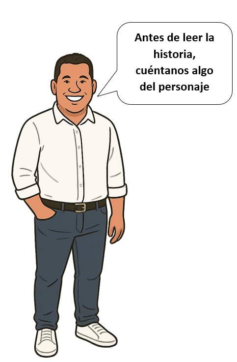
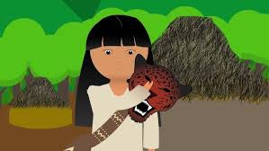
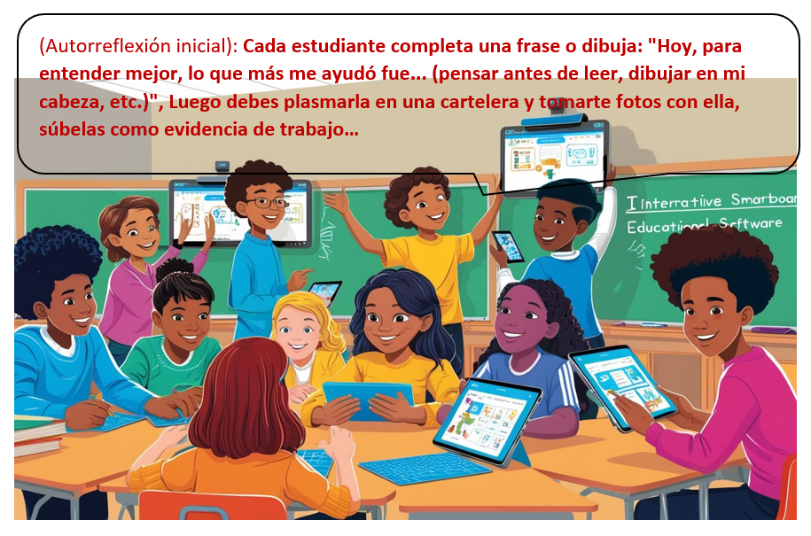
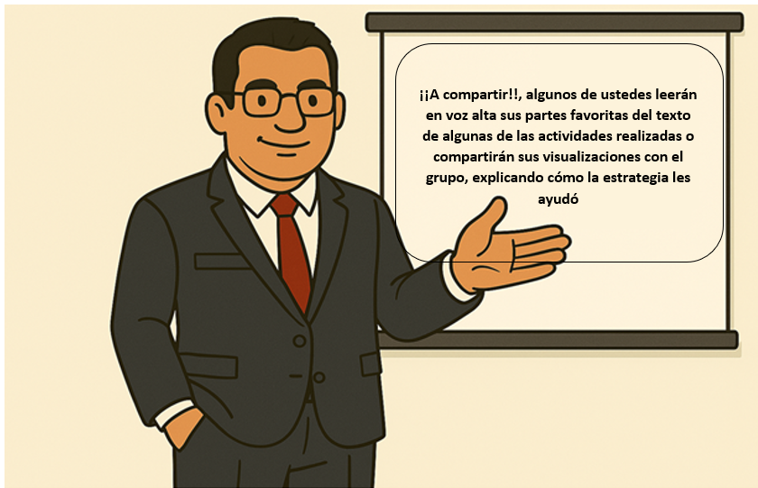

sitio comprensionlectora
Identificación
Secuencia Didáctica
Fortalecimiento de la comprensión lectora en los estudiantes del grado Quinto mediante una secuencia didáctica apoyada en el uso de una RED (exelearning) en la sede marco fidel Suarez de la I E D julio José Ceballos Ospino.buritaca santa marta
Facultad de Ciencias Sociales y Educación, Maestría en Recursos Digitales Aplicados a la Educación, Universidad de Cartagena
Trabajo de grado II
Neirovis Tejada Portacio – Director de Trabajo de Grado
Corregimiento de Buriticá, vereda las arepas, Santa Marta, Magdalena, Colombia.
Nombre de la secuencia didáctica: Mi Tierra, Mi Historia: Sembrando la Lectura
Diseñadores:
- Luis Carlos Chávez Gámez
- Oscar Mario Díaz Guzmán
- Carlos Andrés Bayona García
Institución Educativa: Julio José Ceballos Ospino, Buriticá, Santa Marta
Grupo o Grado a quien va dirigida: QUINTO
Objetivos de aprendizaje
- Activar y relacionar sus conocimientos previos con la información de los textos
- Formular predicciones lógicas sobre el contenido de un texto a partir de su título e imágenes.
- Visualizar mentalmente escenarios, personajes y acciones descritos en textos narrativos y descriptivos.
- Identificar información explícita y literal en textos sencillos sobre su entorno
Contenido:
- Textos contextualizados: Cuentos cortos, leyendas o descripciones de Buriticá (su río, paisajes, animales, costumbres, personajes).
- Textos narrativos sencillos.
- Fecha y duración: 4 sesiones (45-50 minutos cada una)
Criterio de evaluación
- Participación activa en la activación de conocimientos previos y la formulación de predicciones
- Uso de la plataforma Exelearning
- Respuestas precisas a preguntas de comprensión literal
- Verbalización o registro de las estrategias utilizadas (ej., "Imaginé esto...", "Creí que trataría de...")
| Estructura de la secuencia | Actividades | Recursos |
| INICIO |
1. Nuestro Rincón de Saberes (Diagnóstico y Activación de Conocimientos Previos): Se presenta una imagen o video de un lugar icónico de Buriticá (ej., el río, un cultivo, la plaza). Se pregunta a los estudiantes qué saben de ese lugar, qué experiencias han tenido allí. Se registra en un mural o iDevice. 2. ¿Qué nos contará el texto? (Predicción): Se muestra el título y la portada/imágenes de un cuento o leyenda local. Se les pide predecir de qué tratará la historia, quiénes serán los personajes, dónde ocurrirá. Se anotan las predicciones. |
· Exelearning (iDevice: Lluvia de Ideas / Texto Libre). · Imágenes/videos de Buriticá. Pizarra/papelógrafo · Salón de clases · computadoras · Exelearning (iDevice: Pregunta Abierta Texto Libre). Texto digital en eXeLearning |
| DESARROLLO |
1. ¡A Leer y a Imaginar! (Visualización): Lectura grupal o individual del texto por segmentos. Después de cada segmento, el docente modela la estrategia de visualización ("cierro los ojos y me imagino..."). Se les pide a los estudiantes que dibujen o describan en su cuaderno lo que "vieron" en su mente al leer. | 2. ¿Qué decía el texto? (Comprensión Literal): Actividades interactivas sobre el texto leído. Preguntas de opción múltiple, verdadero/falso o completar espacios para identificar datos explícitos (personajes, lugares, acciones principales). 3. Mis imágenes y el texto: Los estudiantes comparan sus visualizaciones (dibujos/descripciones) con el texto original. Reflexionan sobre si lo que imaginaron coincidía con lo que leyeron |
· Cuadernos de dibujo, lápices de colores. · Exelearning (iDevice: Pregunta de Opción Múltiple / Verdadero/Falso / Completar Espacios). · Exelearning (iDevice: Actividad de Lectura con interrupciones para reflexión). Exelearning (iDevice: Reflexión / Texto Libre o Foro de Discusión Sencillo). |
| CIERRE |
1. Mi Estrategia Favorita (Autorreflexión inicial): Cada estudiante completa una frase o dibuja: "Hoy, para entender mejor, lo que más me ayudó fue... (pensar antes de leer, dibujar en mi cabeza, etc.)" 3. Compartiendo la historia de Buriticá: Algunos estudiantes leen en voz alta sus partes favoritas del texto o comparten sus visualizaciones con el grupo, explicando cómo la estrategia les ayudó |
· Exelearning (iDevice: Reflexión / Texto Libre o Nota). Exelearning (iDevice: Foro / Galería de Imágenes si suben dibujos) |
SECUENCIA DIDÁCTICA: INICIO
Nuestro Rincón de Saberes
nuestra tierra...
- 10:00
- 10:00
- Agrupamiento:
- 1
Después de observar detenidamente la imagen y el video puedes decirnos si…
1. ¿Conoces el lugar?
2. ¿Qué te hace recordar?,
3. Cuéntanos tu experiencia en ese lugar
¿Qué nos contará el texto?
¿Qué nos contará el texto?

Mama Málkua
(Mito de la Sierra Nevada de Santa Marta)
Este mito cuenta el origen de los tejidos. Cuenta la historia que cuando era joven, Mama Málkua era un gran cazador con redes demasiado fuertes que él mismo fabricaba para atrapar venados, pájaros y muchos otros animales. Como era tan hábil para hacer redes y mallas, se le ocurrió que también podía tejer telas.
De esta manera empezó a tejer, y como no tenía un telar, o soporte para ese tipo de actividad, entonces debía atar los hilos en las ramas de los árboles. Primero tejió mochilas, después telas, pero como era muy joven y no tenía experiencia en esas artes, nada le quedaba bien hecho.
Cuentan que en una ocasión, la madre estaba paseando por la selva y se encontró con Málkua. Le preguntó qué hacía, y él contestó que estaba creando un vestido. La madre lo vio y le pareció que estaba mal, entonces le dijo a Málkua que consiguiera un vestido que si sirviera. Este respondió que a los jóvenes como él nunca les daban nada.
Entonces la madre decidió que lo mejor era que el joven aprendiera a tejer, y se dedicó a enseñarle. Dicen que a pesar de tener la mejor maestra, Málkua nunca aprendió a tejer bien. La madre enojada, le dijo: “¡para lo único que sirves es para hacer araña!”
El pobre Málkua se fue triste para la selva y entre los árboles tejió su propia telaraña, como hacen los techos de las casas: el hilo formaba una espiral que estaba enrollada hacia la derecha. De esta manera es que la araña teje su tela, en la que quedan atrapados moquitos, moscas y otros insectos, así como gotas de lluvia. La telaraña es como una casa en la que hay de todo: leña, agua y comida.
Tiempo después la madre salió de nuevo a caminar por la selva, y en medio de su recorrido, vio la casa de Málkua. Quedó tan encantada porque era una casa muy bien construida, entonces le dijo: “la gente vive en cuevas. Por eso te digo que vayas a enseñarles a hacer los techos de las casas, como este que tú tienes acá”.
Dicen que Málkua se fue para donde la gente y cumplió el encargo de la madre. Desde entonces, los hombres hacen siempre sus casas con techos.
complementa la lectura
Sopa de letras
2
Hallar las palabras ocultas.
%E9%B0%E6%EB%E2%F7%D5%F3%FF%F7%B0%A8%B0%C1%FD%E2%F3%B0%BE%B0%FB%FC%E1%E6%E0%E7%F1%E6%FB%FD%FC%E1%B0%A8%B0%AE%E2%AC%DA%F3%FE%FE%F3%E0%B2%FE%F3%E1%B2%E2%F3%FE%F3%F0%E0%F3%E1%B2%FD%F1%E7%FE%E6%F3%E1%BC%AE%BD%E2%AC%B0%BE%B0%E1%FA%FD%E5%DF%FB%FC%FB%FF%FB%E8%F7%B0%A8%F4%F3%FE%E1%F7%BE%B0%FB%E6%FB%FC%F7%E0%F3%E0%EB%B0%A8%E9%B0%E1%FA%FD%E5%D1%FE%E7%F7%B0%A8%F4%F3%FE%E1%F7%BE%B0%F1%FE%E7%F7%D5%F3%FF%F7%B0%A8%B0%B0%BE%B0%E2%F7%E0%F1%F7%FC%E6%F3%F5%F7%D1%FE%E7%F7%B0%A8%A6%A2%BE%B0%E1%FA%FD%E5%D1%FD%F6%F7%D3%F1%F1%F7%E1%E1%B0%A8%F4%F3%FE%E1%F7%BE%B0%F1%FD%F6%F7%D3%F1%F1%F7%E1%E1%B0%A8%B0%B0%BE%B0%FF%F7%E1%E1%F3%F5%F7%D1%FD%F6%F7%D3%F1%F1%F7%E1%E1%B0%A8%B0%B0%EF%BE%B0%E5%FD%E0%F6%E1%D5%F3%FF%F7%B0%A8%C9%E9%B0%E5%FD%E0%F6%B0%A8%B0%F1%F3%E8%F3%F6%FD%E0%B0%BE%B0%F6%F7%F4%FB%FC%FB%E6%FB%FD%FC%B0%A8%B0%D6%FB%F1%FA%FD%B2%F6%F7%B2%E7%FC%F3%B2%E2%F7%E0%E1%FD%FC%F3%A8%B2%C3%E7%F7%B2%F1%F3%E8%F3%B2%E2%FD%E0%B2%FD%F4%FB%F1%FB%FD%B2%FD%B2%E2%FD%E0%B2%F6%FB%E4%F7%E0%E1%FBa%FC%B0%BE%B0%EA%B0%A8%A2%BE%B0%EB%B0%A8%A2%BE%B0%F3%E7%E6%FA%FD%E0%B0%A8%B0%B0%BE%B0%F3%FE%E6%B0%A8%B0%B0%BE%B0%E7%E0%FE%B0%A8%B0%BD%E2%E0%F7%E4%FB%F7%E5%E1%BD%D1%CD%CD%C7%E1%F7%E0%E1%CD%C7%E1%F7%E0%CD%D6%FD%F1%E7%FF%F7%FC%E6%E1%CD%E2%FD%E0%E6%F3%F0%FE%F7%BF%DB%DC%C6%D7%D4%BF%F7%EA%F7%BF%A0%BC%AB%BF%E5%FB%FC%CD%C2%DE%D3%C6%D3%D4%DD%C0%DF%D3%CD%FF%F3%FF%F3%CD%FF%F3%FE%F9%E7%F3%CD%F1%F3%E8%F3%F6%FD%E0%BC%F8%E2%F7%F5%B0%BE%B0%F3%E7%F6%FB%FD%B0%A8%B0%B0%BE%B0%E2%F7%E0%F1%F7%FC%E6%F3%F5%F7%C1%FA%FD%E5%B0%A8%FC%E7%FE%FE%EF%BE%E9%B0%E5%FD%E0%F6%B0%A8%B0%E6%F7%F8%F7%E0%B0%BE%B0%F6%F7%F4%FB%FC%FB%E6%FB%FD%FC%B0%A8%B0%F7%FC%E6%E0%F7%FE%F3%E8%F3%E0%B2%FA%FB%FE%FD%E1%BE%B2%F1%E7%F7%E0%F6%F3%E1%BE%B2%F7%E1%E2%F3%E0%E6%FD%BE%B2%F7%E6%F1%BC%BE%B2%E2%F3%E0%F3%B2%F4%FD%E0%FF%F3%E0%B2%E6%F7%FE%F3%E1%BE%B2%E6%E0%F7%FC%E8%F3%E1%BE%B2%F7%E1%E6%F7%E0%F3%E1%B2%E7%B2%FD%E6%E0%FD%E1%B2%FD%F0%F8%F7%E6%FD%E1%B2%E1%FB%FF%FB%FE%F3%E0%F7%E1%BE%B2%FD%B2%F4%FD%E0%FF%F3%E0%B2%E7%FC%F3%B2%E6%F7%FE%F3%B2%F7%FC%B2%E7%FC%B2%E6%F7%FE%F3%E0%BC%B0%BE%B0%EA%B0%A8%A2%BE%B0%EB%B0%A8%A2%BE%B0%F3%E7%E6%FA%FD%E0%B0%A8%B0%B0%BE%B0%F3%FE%E6%B0%A8%B0%B0%BE%B0%E7%E0%FE%B0%A8%B0%BD%E2%E0%F7%E4%FB%F7%E5%E1%BD%D1%CD%CD%C7%E1%F7%E0%E1%CD%C7%E1%F7%E0%CD%D6%FD%F1%E7%FF%F7%FC%E6%E1%CD%E2%FD%E0%E6%F3%F0%FE%F7%BF%DB%DC%C6%D7%D4%BF%F7%EA%F7%BF%A0%BC%AB%BF%E5%FB%FC%CD%C2%DE%D3%C6%D3%D4%DD%C0%DF%D3%CD%FF%F3%FF%F3%CD%FF%F3%FE%F9%E7%F3%CD%E6%F7%F8%FB%F6%FD%BC%F8%E2%F7%F5%B0%BE%B0%F3%E7%F6%FB%FD%B0%A8%B0%B0%BE%B0%E2%F7%E0%F1%F7%FC%E6%F3%F5%F7%C1%FA%FD%E5%B0%A8%FC%E7%FE%FE%EF%BE%E9%B0%E5%FD%E0%F6%B0%A8%B0%FF%F3%FE%F9%E7%F3%B0%BE%B0%F6%F7%F4%FB%FC%FB%E6%FB%FD%FC%B0%A8%B0%E2%F7%E0%E1%FD%FC%F3%F8%F7%B2%FB%FF%E2%FD%E0%E6%F3%FC%E6%F7%B2%F7%FC%B2%FE%F3%B2%FF%FB%E6%FD%FE%FD%F5%7F%F3%B2%F6%F7%B2%FE%FD%E1%B2%FB%FC%F6%7F%F5%F7%FC%F3%E1%B2%D9%FD%F5%E7%FB%BE%B2%E3%E7%F7%B2%FA%F3%F0%FB%E6%F3%FC%B2%F7%FC%B2%FE%F3%B2%C1%FB%F7%E0%E0%F3%B2%DC%F7%E4%F3%F6%F3%B2%F6%F7%B2%C1%F3%FC%E6%F3%B2%DF%F3%E0%E6%F3%B2%F7%FC%B2%D1%FD%FE%FD%FF%F0%FB%F3%B0%BE%B0%EA%B0%A8%A2%BE%B0%EB%B0%A8%A2%BE%B0%F3%E7%E6%FA%FD%E0%B0%A8%B0%B0%BE%B0%F3%FE%E6%B0%A8%B0%B0%BE%B0%E7%E0%FE%B0%A8%B0%BD%E2%E0%F7%E4%FB%F7%E5%E1%BD%D1%CD%CD%C7%E1%F7%E0%E1%CD%C7%E1%F7%E0%CD%D6%FD%F1%E7%FF%F7%FC%E6%E1%CD%E2%FD%E0%E6%F3%F0%FE%F7%BF%DB%DC%C6%D7%D4%BF%F7%EA%F7%BF%A0%BC%AB%BF%E5%FB%FC%CD%C2%DE%D3%C6%D3%D4%DD%C0%DF%D3%CD%FF%F3%FF%F3%CD%FF%F3%FE%F9%E7%F3%CD%FF%F3%FE%F9%E7%F3%BC%F8%E2%F7%F5%B0%BE%B0%F3%E7%F6%FB%FD%B0%A8%B0%B0%BE%B0%E2%F7%E0%F1%F7%FC%E6%F3%F5%F7%C1%FA%FD%E5%B0%A8%FC%E7%FE%FE%EF%BE%E9%B0%E5%FD%E0%F6%B0%A8%B0%FF%FD%F1%FA%FB%FE%F3%B0%BE%B0%F6%F7%F4%FB%FC%FB%E6%FB%FD%FC%B0%A8%B0%B2%F0%FD%FE%E1%F3%B2%E6%F7%F8%FB%F6%F3%B2%F3%B2%FF%F3%FC%FD%B2%E2%FD%E0%B2%FE%F3%B2%F1%FD%FF%E7%FC%FB%F6%F3%F6%B2%FB%FC%F6%7F%F5%F7%FC%F3%B2%D9%FD%F5%E7%FB%B2%F6%F7%B2%FE%F3%B2%C1%FB%F7%E0%E0%F3%B2%DC%F7%E4%F3%F6%F3%B2%F6%F7%B2%C1%F3%FC%E6%F3%B2%DF%F3%E0%E6%F3%BE%B2%D1%FD%FE%FD%FF%F0%FB%F3%B0%BE%B0%EA%B0%A8%A2%BE%B0%EB%B0%A8%A2%BE%B0%F3%E7%E6%FA%FD%E0%B0%A8%B0%B0%BE%B0%F3%FE%E6%B0%A8%B0%B0%BE%B0%E7%E0%FE%B0%A8%B0%BD%E2%E0%F7%E4%FB%F7%E5%E1%BD%D1%CD%CD%C7%E1%F7%E0%E1%CD%C7%E1%F7%E0%CD%D6%FD%F1%E7%FF%F7%FC%E6%E1%CD%E2%FD%E0%E6%F3%F0%FE%F7%BF%DB%DC%C6%D7%D4%BF%F7%EA%F7%BF%A0%BC%AB%BF%E5%FB%FC%CD%C2%DE%D3%C6%D3%D4%DD%C0%DF%D3%CD%FF%F3%FF%F3%CD%FF%F3%FE%F9%E7%F3%CD%FF%FD%F1%FA%FB%FE%F3%BC%E2%FC%F5%B0%BE%B0%F3%E7%F6%FB%FD%B0%A8%B0%B0%BE%B0%E2%F7%E0%F1%F7%FC%E6%F3%F5%F7%C1%FA%FD%E5%B0%A8%FC%E7%FE%FE%EF%BE%E9%B0%E5%FD%E0%F6%B0%A8%B0%F9%FD%F5%E7%FB%B0%BE%B0%F6%F7%F4%FB%FC%FB%E6%FB%FD%FC%B0%A8%B0%F7%E1%B2%F7%FE%B2%FC%FD%FF%F0%E0%F7%B2%F6%F7%B2%E7%FC%B2%E2%E7%F7%F0%FE%FD%B2%FB%FC%F6%7F%F5%F7%FC%F3%B2%E3%E7%F7%B2%FA%F3%F0%FB%E6%F3%B2%FE%F3%B2%C1%FB%F7%E0%E0%F3%B2%DC%F7%E4%F3%F6%F3%B2%F6%F7%B2%C1%F3%FC%E6%F3%B2%DF%F3%E0%E6%F3%B2%F7%FC%B2%D1%FD%FE%FD%FF%F0%FB%F3%B0%BE%B0%EA%B0%A8%A2%BE%B0%EB%B0%A8%A2%BE%B0%F3%E7%E6%FA%FD%E0%B0%A8%B0%B0%BE%B0%F3%FE%E6%B0%A8%B0%B0%BE%B0%E7%E0%FE%B0%A8%B0%BD%E2%E0%F7%E4%FB%F7%E5%E1%BD%D1%CD%CD%C7%E1%F7%E0%E1%CD%C7%E1%F7%E0%CD%D6%FD%F1%E7%FF%F7%FC%E6%E1%CD%E2%FD%E0%E6%F3%F0%FE%F7%BF%DB%DC%C6%D7%D4%BF%F7%EA%F7%BF%A0%BC%AB%BF%E5%FB%FC%CD%C2%DE%D3%C6%D3%D4%DD%C0%DF%D3%CD%FF%F3%FF%F3%CD%FF%F3%FE%F9%E7%F3%CD%F1%FD%F5%FA%FB%BC%F8%E2%F5%B0%BE%B0%F3%E7%F6%FB%FD%B0%A8%B0%B0%BE%B0%E2%F7%E0%F1%F7%FC%E6%F3%F5%F7%C1%FA%FD%E5%B0%A8%FC%E7%FE%FE%EF%BE%E9%B0%E5%FD%E0%F6%B0%A8%B0%E6%F7%F1%FA%FD%B0%BE%B0%F6%F7%F4%FB%FC%FB%E6%FB%FD%FC%B0%A8%B0%C1%E7%E2%F7%E0%F4%FB%F1%FB%F7%B2%E3%E7%F7%B2%F1%FB%F7%E0%E0%F3%B2%F7%FC%B2%FE%FD%B2%F3%FE%E6%FD%B2%E7%FC%F3%B2%FA%F3%F0%FB%E6%F3%F1%FBa%FC%B2%FD%B2%F7%E1%E2%F3%F1%FB%FD%B2%F1%E7%F0%FB%F7%E0%E6%FD%BC%B0%BE%B0%EA%B0%A8%A2%BE%B0%EB%B0%A8%A2%BE%B0%F3%E7%E6%FA%FD%E0%B0%A8%B0%B0%BE%B0%F3%FE%E6%B0%A8%B0%B0%BE%B0%E7%E0%FE%B0%A8%B0%BD%E2%E0%F7%E4%FB%F7%E5%E1%BD%D1%CD%CD%C7%E1%F7%E0%E1%CD%C7%E1%F7%E0%CD%D6%FD%F1%E7%FF%F7%FC%E6%E1%CD%E2%FD%E0%E6%F3%F0%FE%F7%BF%DB%DC%C6%D7%D4%BF%F7%EA%F7%BF%A0%BC%AB%BF%E5%FB%FC%CD%C2%DE%D3%C6%D3%D4%DD%C0%DF%D3%CD%FF%F3%FF%F3%CD%FF%F3%FE%F9%E7%F3%CD%C6%D7%D1%DA%DD%BC%F8%E2%F7%F5%B0%BE%B0%F3%E7%F6%FB%FD%B0%A8%B0%B0%BE%B0%E2%F7%E0%F1%F7%FC%E6%F3%F5%F7%C1%FA%FD%E5%B0%A8%FC%E7%FE%FE%EF%BE%E9%B0%E5%FD%E0%F6%B0%A8%B0%E6%F7%FE%F3%E0%F3c%F3%B0%BE%B0%F6%F7%F4%FB%FC%FB%E6%FB%FD%FC%B0%A8%B0%E0%F7%F6%B2%E3%E7%F7%B2%F1%FD%FC%E1%E6%E0%E7%EB%F7%B2%E7%FC%F3%B2%F3%E0%F3c%F3%B2%F1%FD%FC%B2%E1%E7%B2%E1%F7%F6%F3%B0%BE%B0%EA%B0%A8%A2%BE%B0%EB%B0%A8%A2%BE%B0%F3%E7%E6%FA%FD%E0%B0%A8%B0%B0%BE%B0%F3%FE%E6%B0%A8%B0%B0%BE%B0%E7%E0%FE%B0%A8%B0%BD%E2%E0%F7%E4%FB%F7%E5%E1%BD%D1%CD%CD%C7%E1%F7%E0%E1%CD%C7%E1%F7%E0%CD%D6%FD%F1%E7%FF%F7%FC%E6%E1%CD%E2%FD%E0%E6%F3%F0%FE%F7%BF%DB%DC%C6%D7%D4%BF%F7%EA%F7%BF%A0%BC%AB%BF%E5%FB%FC%CD%C2%DE%D3%C6%D3%D4%DD%C0%DF%D3%CD%FF%F3%FF%F3%CD%FF%F3%FE%F9%E7%F3%CD%C6%D7%DE%D3%C0%D3%CD%D1%A1%CD%AB%A3%D3%BC%F8%E2%F7%F5%B0%BE%B0%F3%E7%F6%FB%FD%B0%A8%B0%B0%BE%B0%E2%F7%E0%F1%F7%FC%E6%F3%F5%F7%C1%FA%FD%E5%B0%A8%FC%E7%FE%FE%EF%CF%BE%B0%FB%E1%C1%F1%FD%E0%FF%B0%A8%A2%BE%B0%E6%F7%EA%E6%D0%E7%E6%E6%FD%FC%C1%F1%FD%E0%FF%B0%A8%B0%D5%E7%F3%E0%F6%F3%E0%B2%FE%F3%B2%E2%E7%FC%E6%E7%F3%F1%FBa%FC%B0%BE%B0%E0%F7%E2%F7%F3%E6%D3%F1%E6%FB%E4%FB%E6%EB%B0%A8%F4%F3%FE%E1%F7%BE%B0%E6%F7%EA%E6%D4%F7%F7%F6%D0%F3%F1%F9%B0%A8%B0%B0%BE%B0%E6%F7%EA%E6%D3%F4%E6%F7%E0%B0%A8%B0%B0%BE%B0%F4%F7%F7%F6%D0%F3%F1%F9%B0%A8%F4%F3%FE%E1%F7%BE%B0%E2%F7%E0%F1%F7%FC%E6%F3%F8%F7%D4%D0%B0%A8%A3%A2%A2%BE%B0%E4%F7%E0%E1%FB%FD%FC%B0%A8%A3%BE%B0%E2%F7%E0%F1%F7%FC%E6%F3%F8%F7%C3%E7%F7%E1%E6%FB%FD%FC%E1%B0%A8%A3%A2%A2%BE%B0%E6%FB%FF%F7%B0%A8%A2%BE%B0%F6%FB%F3%F5%FD%FC%F3%FE%E1%B0%A8%F4%F3%FE%E1%F7%BE%B0%E0%F7%E4%F7%E0%E1%F7%E1%B0%A8%F4%F3%FE%E1%F7%BE%B0%E1%FA%FD%E5%C0%F7%E1%FD%FE%E4%F7%B0%A8%E6%E0%E7%F7%BE%B0%F7%E4%F3%FE%E7%F3%E6%FB%FD%FC%B0%A8%F4%F3%FE%E1%F7%BE%B0%F7%E4%F3%FE%E7%F3%E6%FB%FD%FC%DB%D6%B0%A8%B0%B0%BE%B0%FB%F6%B0%A8%B0%A0%A2%A0%A7%A5%A3%AB%A0%A6%A1%A7%A5%A1%A2%A2%B0%BE%B0%FF%E1%F5%E1%B0%A8%E9%B0%FF%E1%F5%C0%F7%E2%FE%EB%B0%A8%B0%C0%F7%E1%E2%FD%FC%F6%F7%E0%B0%BE%B0%FF%E1%F5%D7%FC%E6%F7%E0%D1%FD%F6%F7%B0%A8%B0%DB%FC%E6%E0%FD%F6%E7%E8%F1%F3%B2%F7%FE%B2%F1a%F6%FB%F5%FD%B2%F6%F7%B2%F3%F1%F1%F7%E1%FD%B0%BE%B0%FF%E1%F5%D7%E0%E0%FD%E0%D1%FD%F6%F7%B0%A8%B0%D7%FE%B2%F1a%F6%FB%F5%FD%B2%F6%F7%B2%F3%F1%F1%F7%E1%FD%B2%FC%FD%B2%F7%E1%B2%F1%FD%E0%E0%F7%F1%E6%FD%B0%BE%B0%FF%E1%F5%D1%FE%E7%F7%B0%A8%B03%D5%F7%FC%FB%F3%FE%B3%B2%DE%F3%B2%E2%FB%E1%E6%F3%B2%F7%E1%A8%B0%BE%B0%FF%E1%F5%D1%FD%F6%F7%D3%F1%F1%F7%E1%E1%B0%A8%B0%D1a%F6%FB%F5%FD%B2%F6%F7%B2%F3%F1%F1%F7%E1%FD%B0%BE%B0%FF%E1%F5%C2%FE%F3%EB%C1%E6%F3%E0%E6%B0%A8%B0%C2%E7%FE%E1%F7%B2%F3%E3%E7%7F%B2%E2%F3%E0%F3%B2%F8%E7%F5%F3%E0%B0%BE%B0%FF%E1%F5%DA%FB%E6%E1%B0%A8%B0%D3%F1%FB%F7%E0%E6%FD%E1%B0%BE%B0%FF%E1%F5%C1%F1%FD%E0%F7%B0%A8%B0%C2%E7%FC%E6%E7%F3%F1%FBa%FC%B0%BE%B0%FF%E1%F5%DF%FB%FC%FB%FF%FB%E8%F7%B0%A8%B0%DF%FB%FC%FB%FF%FB%E8%F3%E0%B0%BE%B0%FF%E1%F5%DF%F3%EA%FB%FF%FB%E8%F7%B0%A8%B0%DF%F3%EA%FB%FF%FB%E8%F3%E0%B0%BE%B0%FF%E1%F5%C6%FB%FF%F7%B0%A8%B0%DE%7F%FF%FB%E6%F7%B2%F6%F7%B2%E6%FB%F7%FF%E2%FD%B2%BA%FF%FF%A8%E1%E1%BB%B0%BE%B0%FF%E1%F5%D4%E7%FE%FE%C1%F1%E0%F7%F7%FC%B0%A8%B0%C2%F3%FC%E6%F3%FE%FE%F3%B2%D1%FD%FF%E2%FE%F7%E6%F3%B0%BE%B0%FF%E1%F5%D7%EA%FB%E6%D4%E7%FE%FE%C1%F1%E0%F7%F7%FC%B0%A8%B0%C1%F3%FE%FB%E0%B2%F6%F7%FE%B2%FF%FD%F6%FD%B2%E2%F3%FC%E6%F3%FE%FE%F3%B2%F1%FD%FF%E2%FE%F7%E6%F3%B0%BE%B0%FF%E1%F5%DC%E7%FF%C3%E7%F7%E1%E6%FB%FD%FC%E1%B0%A8%B0%DCh%FF%F7%E0%FD%B2%F6%F7%B2%E2%E0%F7%F5%E7%FC%E6%F3%E1%B0%BE%B0%FF%E1%F5%DC%FD%DB%FF%F3%F5%F7%B0%A8%B0%C2%E0%F7%F5%E7%FC%E6%F3%B2%E1%FB%FC%B2%FB%FFs%F5%F7%FC%F7%E1%B0%BE%B0%FF%E1%F5%C1%E7%F1%F1%F7%E1%E1%F7%E1%B0%A8%B03%D1%FD%E0%E0%F7%F1%E6%FD%B3%B2%EE%B23%D7%EA%F1%F7%FE%F7%FC%E6%F7%B3%B2%EE%B23%D5%F7%FC%FB%F3%FE%B3%B2%EE%B23%DF%E7%EB%B2%F0%FB%F7%FC%B3%B2%EE%B23%C2%F7%E0%F4%F7%F1%E6%FD%B3%B0%BE%B0%FF%E1%F5%D4%F3%FB%FE%E7%E0%F7%E1%B0%A8%B03%DC%FD%B2%F7%E0%F3%B2%F7%E1%FD%B3%B2%EE%B23%DB%FC%F1%FD%E0%E0%F7%F1%E6%FD%B3%B2%EE%B23%DC%FD%B2%F7%E1%B2%F1%FD%E0%E0%F7%F1%E6%FD%B3%B2%EE%B23%DE%FD%B2%E1%F7%FC%E6%FB%FF%FD%E1%B3%B2%EE%B23%D7%E0%E0%FD%E0%B3%B0%BE%B0%FF%E1%F5%C6%E0%EB%D3%F5%F3%FB%FC%B0%A8%B0%DC%F7%F1%F7%E1%FB%E6%F3%B2%F3%FE%B2%FF%F7%FC%FD%E1%B2%E7%FC%B2%B7%E1%B7%B2%F6%F7%B2%E0%F7%E1%E2%E7%F7%E1%E6%F3%E1%B2%F1%FD%E0%E0%F7%F1%E6%F3%E1%B2%E2%F3%E0%F3%B2%F1%FD%FC%E1%F7%F5%E7%FB%E0%B2%FE%F3%B2%FB%FC%F4%FD%E0%FF%F3%F1%FBa%FC%BC%B2%C4%E7%F7%FE%E4%F3%B2%F3%B2%FB%FC%E6%F7%FC%E6%F3%E0%FE%FD%BC%B0%BE%B0%FF%E1%F5%C1%F1%FD%E0%F7%C1%F1%FD%E0%FF%B0%A8%B0%DE%F3%B2%E2%E7%FC%E6%E7%F3%F1%FBa%FC%B2%FC%FD%B2%E1%F7%B2%E2%E7%F7%F6%F7%B2%F5%E7%F3%E0%F6%F3%E0%B2%E2%FD%E0%E3%E7%F7%B2%F7%E1%E6%F3%B2%E2s%F5%FB%FC%F3%B2%FC%FD%B2%F4%FD%E0%FF%F3%B2%E2%F3%E0%E6%F7%B2%B2%F6%F7%B2%E7%FC%B2%E2%F3%E3%E7%F7%E6%F7%B2%C1%D1%DD%C0%DF%BC%B0%BE%B0%FF%E1%F5%DD%FC%FE%EB%C1%F3%E4%F7%C1%F1%FD%E0%F7%B0%A8%B03%C1a%FE%FD%B2%E2%E7%F7%F6%F7%B2%F5%E7%F3%E0%F6%F3%E0%B2%FE%F3%B2%E2%E7%FC%E6%E7%F3%F1%FBa%FC%B2%E7%FC%F3%B2%E4%F7%E8%B3%B0%BE%B0%FF%E1%F5%DD%FC%FE%EB%C1%F3%E4%F7%B0%A8%B0%C1a%FE%FD%B2%E2%E7%F7%F6%F7%B2%F5%E7%F3%E0%F6%F3%E0%B2%E7%FC%F3%B2%E4%F7%E8%B0%BE%B0%FF%E1%F5%DB%FC%F4%FD%E0%FF%F3%E6%FB%FD%FC%B0%A8%B0%DB%FC%F4%FD%E0%FF%F3%F1%FBa%FC%B0%BE%B0%FF%E1%F5%DD%FC%FE%EB%C1%F3%E4%F7%D3%E7%E6%FD%B0%A8%B0%C1%E7%B2%E2%E7%FC%E6%E7%F3%F1%FBa%FC%B2%E1%F7%B2%F5%E7%F3%E0%F6%F3%E0s%B2%F6%F7%E1%E2%E7%7B%E1%B2%F6%F7%B2%F1%F3%F6%F3%B2%E2%E0%F7%F5%E7%FC%E6%F3%BC%B2%C1a%FE%FD%B2%E2%E7%F7%F6%F7%B2%F8%E7%F5%F3%E0%B2%E7%FC%F3%B2%E4%F7%E8%BC%B0%BE%B0%FF%E1%F5%C1%F3%E4%F7%D3%E7%E6%FD%B0%A8%B0%C1%E7%B2%E2%E7%FC%E6%E7%F3%F1%FBa%FC%B2%E1%F7%B2%F5%E7%F3%E0%F6%F3%E0s%B2%F3%E7%E6%FD%FFs%E6%FB%F1%F3%FF%F7%FC%E6%F7%B2%F6%F7%E1%E2%E7%7B%E1%B2%F6%F7%B2%F1%F3%F6%F3%B2%E2%E0%F7%F5%E7%FC%E6%F3%BC%B0%BE%B0%FF%E1%F5%C1%F7%E4%F7%E0%F3%FE%C1%F1%FD%E0%F7%B0%A8%B0%C2%E7%F7%F6%F7%B2%F5%E7%F3%E0%F6%F3%E0%B2%FE%F3%B2%E2%E7%FC%E6%E7%F3%F1%FBa%FC%B2%E6%F3%FC%E6%F3%E1%B2%E4%F7%F1%F7%E1%B2%F1%FD%FF%FD%B2%E3%E7%FB%F7%E0%F3%B0%BE%B0%FF%E1%F5%CB%FD%E7%DE%F3%E1%E6%C1%F1%FD%E0%F7%B0%A8%B0%DE%F3%B2h%FE%E6%FB%FF%F3%B2%E2%E7%FC%E6%E7%F3%F1%FBa%FC%B2%F5%E7%F3%E0%F6%F3%F6%F3%B2%F7%E1%B0%BE%B0%FF%E1%F5%D3%F1%E6%FB%E6%EB%D1%FD%FF%E2%FE%EB%B0%A8%B0%CB%F3%B2%FA%F3%B2%E0%F7%F3%FE%FB%E8%F3%F6%FD%B2%F7%E1%E6%F3%B2%F3%F1%E6%FB%E4%FB%F6%F3%F6%BC%B0%BE%B0%FF%E1%F5%C2%FE%F3%EB%C1%F7%E4%F7%E0%F3%FE%C6%FB%FF%F7%E1%B0%A8%B0%C2%E7%F7%F6%F7%B2%E0%F7%F3%FE%FB%E8%F3%E0%B2%F7%E1%E6%F3%B2%F3%F1%E6%FB%E4%FB%F6%F3%F6%B2%F1%E7%F3%FC%E6%F3%E1%B2%E4%F7%F1%F7%E1%B2%E3%E7%FB%F7%E0%F3%B0%BE%B0%FF%E1%F5%D1%FE%FD%E1%F7%B0%A8%B0%D1%F7%E0%E0%F3%E0%B0%BE%B0%FF%E1%F5%C2%FD%FB%FC%E6%E1%B0%A8%B0%E2%E7%FC%E6%FD%E1%B0%BE%B0%FF%E1%F5%D3%E7%F6%FB%FD%B0%A8%B0%D3%E7%F6%FB%FD%B0%BE%B0%FF%E1%F5%C5%FD%E0%F6%E1%D4%FB%FC%F6%B0%A8%B0%DA%F3%E1%B2%F7%FC%F1%FD%FC%E6%E0%F3%F6%FD%B2%E6%FD%F6%F3%E1%B2%FE%F3%E1%B2%E2%F3%FE%F3%F0%E0%F3%E1%BC%B2%C6%E7%B2%E2%E7%FC%E6%E7%F3%F1%FBa%FC%B2%F7%E1%B2%B7%E1%BC%B0%BE%B0%FF%E1%F5%D7%FC%F6%D5%F3%FF%F7%C1%F1%FD%E0%F7%B0%A8%B0%DB%FC%FB%F1%FB%F3%B2%F7%FE%B2%F8%E7%F7%F5%FD%BC%BC%BC%B0%BE%B0%FF%F5%E1%D5%F3%FF%F7%C1%E6%F3%E0%E6%B0%A8%B0%D7%FE%B2%F8%E7%F7%F5%FD%B2%EB%F3%B2%FA%F3%B2%F1%FD%FF%F7%FC%E8%F3%F6%FD%BC%B0%BE%B0%FF%E1%F5%CB%FD%E7%C1%F1%FD%E0%F7%B0%A8%B0%C2%E7%FC%E6%E7%F3%F1%FBa%FC%B0%BE%B0%FF%E1%F5%D7%FC%F6%C6%FB%FF%F7%B0%A8%B0%D3%F1%F3%F0a%B2%F7%FE%B2%E6%FB%F7%FF%E2%FD%B2%F6%F7%B2%F8%E7%F7%F5%FD%BC%B2%C6%E7%B2%E2%E7%FC%E6%E7%F3%F1%FBa%FC%B2%F7%E1%B2%B7%E1%BC%B0%BE%B0%FF%E1%F5%D7%FC%F6%B0%A8%B0%D4%FB%FC%F3%FE%FB%E8%F3%E0%B0%BE%B0%FF%E1%F5%D7%FC%F6%D5%F3%FF%F7%DF%B0%A8%B0%DA%F3%E1%B2%F1%FD%FF%E2%FE%F7%E6%F3%F6%FD%B2%F7%FE%B2%F8%E7%F7%F5%FD%BC%B2%C6%E7%B2%E2%E7%FC%E6%E7%F3%F1%FBa%FC%B2%F7%E1%B2%B7%E1%BC%B0%BE%B0%FF%E1%F5%C7%FC%F1%FD%FF%E2%FE%F7%E6%F7%F6%D3%F1%E6%FB%E4%FB%E6%EB%B0%A8%B0%D3%F1%E6%FB%E4%FB%F6%F3%F6%B2%FC%FD%B2%F1%FD%FF%E2%FE%F7%E6%F3%F6%F3%B0%BE%B0%FF%E1%F5%C1%E7%F1%F1%F7%E1%E1%F4%E7%FE%D3%F1%E6%FB%E4%FB%E6%EB%B0%A8%B0%D3%F1%E6%FB%E4%FB%F6%F3%F6%B2%E1%E7%E2%F7%E0%F3%F6%F3%BC%B2%C2%E7%FC%E6%E7%F3%F1%FBa%FC%A8%B2%B7%E1%B0%BE%B0%FF%E1%F5%C7%FC%E1%E7%F1%F1%F7%E1%E1%F4%E7%FE%D3%F1%E6%FB%E4%FB%E6%EB%B0%A8%B0%D3%F1%E6%FB%E4%FB%F6%F3%F6%B2%FC%FD%B2%E1%E7%E2%F7%E0%F3%F6%F3%BC%B2%C2%E7%FC%E6%E7%F3%F1%FBa%FC%A8%B2%B7%E1%B0%BE%B0%FF%E1%F5%C6%EB%E2%F7%D5%F3%FF%F7%B0%A8%B0%C1%FD%E2%F3%B2%F6%F7%B2%FE%F7%E6%E0%F3%E1%B0%EF%EF
0123456{kind=link}
{kind=link}
{kind=link}
{kind=link}
{kind=link}
{kind=link}
{kind=link}
Su navegador no es compatible con esta herramienta.
Relaciona
Relaciona cada tarjeta con su pareja.
{"typeGame":"Relaciona","author":"","randomCards":true,"instructions":"
0123456Relaciona cada tarjeta con su pareja.
","showMinimize":false,"itinerary":{"showClue":false,"clueGame":"","percentageClue":40,"showCodeAccess":false,"codeAccess":"","messageCodeAccess":""},"cardsGame":[{"url":"","x":0,"y":0,"author":"","alt":"","audio":"","color":"#000000","backcolor":"#ffffff","eText":"cazador","urlBk":"/previews/C__Users_User_Documents_portable-INTEF-exe-2.9-win_PLATAFORMA_mama_malkua_cazador.jpeg","xBk":0,"yBk":0,"authorBk":"","altBk":"","audioBk":"","colorBk":"#000000","backcolorBk":"#ffffff","eTextBk":""},{"url":"","x":0,"y":0,"author":"","alt":"","audio":"","color":"#000000","backcolor":"#ffffff","eText":"kogui","urlBk":"/previews/C__Users_User_Documents_portable-INTEF-exe-2.9-win_PLATAFORMA_mama_malkua_coghi.jpg","xBk":0,"yBk":0,"authorBk":"","altBk":"","audioBk":"","colorBk":"#000000","backcolorBk":"#ffffff","eTextBk":""},{"url":"","x":0,"y":0,"author":"","alt":"","audio":"","color":"#000000","backcolor":"#ffffff","eText":"Mama%20Malkua","urlBk":"/previews/C__Users_User_Documents_portable-INTEF-exe-2.9-win_PLATAFORMA_mama_malkua_malkua.jpeg","xBk":0,"yBk":0,"authorBk":"","altBk":"","audioBk":"","colorBk":"#000000","backcolorBk":"#ffffff","eTextBk":""},{"url":"","x":0,"y":0,"author":"","alt":"","audio":"","color":"#000000","backcolor":"#ffffff","eText":"Mochila","urlBk":"/previews/C__Users_User_Documents_portable-INTEF-exe-2.9-win_PLATAFORMA_mama_malkua_mochila.png","xBk":0,"yBk":0,"authorBk":"","altBk":"","audioBk":"","colorBk":"#000000","backcolorBk":"#ffffff","eTextBk":""},{"url":"","x":0,"y":0,"author":"","alt":"","audio":"","color":"#000000","backcolor":"#ffffff","eText":"Techo","urlBk":"/previews/C__Users_User_Documents_portable-INTEF-exe-2.9-win_PLATAFORMA_mama_malkua_TECHO.jpeg","xBk":0,"yBk":0,"authorBk":"","altBk":"","audioBk":"","colorBk":"#000000","backcolorBk":"#ffffff","eTextBk":""},{"url":"","x":0,"y":0,"author":"","alt":"","audio":"","color":"#000000","backcolor":"#ffffff","eText":"Tejer","urlBk":"/previews/C__Users_User_Documents_portable-INTEF-exe-2.9-win_PLATAFORMA_mama_malkua_tejido.jpeg","xBk":0,"yBk":0,"authorBk":"","altBk":"","audioBk":"","colorBk":"#000000","backcolorBk":"#ffffff","eTextBk":""},{"url":"","x":0,"y":0,"author":"","alt":"","audio":"","color":"#000000","backcolor":"#ffffff","eText":"Telara%C3%B1a","urlBk":"/previews/C__Users_User_Documents_portable-INTEF-exe-2.9-win_PLATAFORMA_mama_malkua_TELARA_C3_91A.jpeg","xBk":0,"yBk":0,"authorBk":"","altBk":"","audioBk":"","colorBk":"#000000","backcolorBk":"#ffffff","eTextBk":""}],"isScorm":0,"textButtonScorm":"Guardar la puntuación","repeatActivity":false,"textAfter":"","version":1.3,"percentajeCards":100,"type":0,"showSolution":true,"timeShowSolution":3,"time":3,"evaluation":false,"evaluationID":"","id":"202571925823300","msgs":{"msgSubmit":"Enviar","msgClue":"¡Genial! La pista es:","msgCodeAccess":"Código de acceso","msgPlayStart":"Pulse aquí para jugar","msgScore":"Puntuación","msgErrors":"Errores","msgHits":"Aciertos","msgMinimize":"Minimizar","msgMaximize":"Maximizar","msgFullScreen":"Pantalla Completa","msgExitFullScreen":"Salir del modo pantalla completa","msgNoImage":"Pregunta sin imágenes","msgEndGameScore":"Antes de guardar la puntuación comience la partida.","msgScoreScorm":"La puntuación no se puede guardar porque esta página no forma parte de un paquete SCORM.","msgOnlySaveScore":"¡Sólo puede guardar la puntuación una vez!","msgOnlySave":"Sólo puede guardar una vez","msgInformation":"Información","msgYouScore":"Su puntuación","msgAuthor":"Autoría","msgOnlySaveAuto":"Su puntuación se guardará después de cada pregunta. Sólo puede jugar una vez.","msgSaveAuto":"Su puntuación se guardará automáticamente después de cada pregunta.","msgSeveralScore":"Puede guardar la puntuación tantas veces como quiera","msgYouLastScore":"La última puntuación guardada es","msgActityComply":"Ya ha realizado esta actividad.","msgPlaySeveralTimes":"Puede realizar esta actividad cuantas veces quiera","msgClose":"Cerrar","msgAudio":"Audio","msgNumQuestions":"Número de tarjetas","msgTryAgain":"Necesita al menos un %s% de respuestas correctas para conseguir la información. Vuelva a intentarlo.","msgEndGameM":"Has completado el juego. Tu puntuación es %s.","msgUncompletedActivity":"Actividad no completada","msgSuccessfulActivity":"Actividad superada. Puntuación: %s","msgUnsuccessfulActivity":"Actividad no superada. Puntuación: %s","msgTypeGame":"Relaciona","msgCheck":"Comprobar","msgRestart":"Reiniciar"}}Su navegador no es compatible con esta herramienta.
SECUENCIA DIDACTICA: DESARROLLO
¡A Leer y a Imaginar!
Cashinducua y la creación de los Kogui.
Cashinducua y la creación de los Kogui.
En el comienzo los dioses crearon nueve cielos concediéndoles una madre y un padre a cada uno ellos, crearon los seres vivos que más tarde poblaría en la tierra, Gualchoban la madre del quinto cielo creó a la gente del jaguar, los ancestros de los kogui, el hijo de Gualchoban era Cashinducua, ella le dio tres regalos un guijarro azul, una máscara de jaguar tallada de madera y el poder de curar todas las enfermedades.
Un día Cashinducua mientras descansaba en su hamaca jugando con la máscara que le había regalado su madre al no aguantar la tentación se la probó, cuando alzó la vista vio delante de él, una piña muy jugosa, ¡qué delicia!, brinco de la hamaca, la agarró y se la tragó, volvió a su hamaca y le dijo a su mujer, “sabes ya no tengo hambre, me comí esa piña y perdí todas las ganas de almorzar “, su esposa no le contestó,
Diquijuinameh al ser un hombre muy curioso se probó la máscara cuando todo el mundo dormía se convirtió en jaguar, corrió hacia el bosque y rondó por los árboles, en el camino vio a una niña corriendo hacia un matorral C
Poco después Cashinducua llegó a su sembrado a recoger hojas de coca para tostar y fue inmensa su furia al encontrar los arbustos sin una sola hoja, de repente vio una larga fila de hormigas rojas cada una acarreando una hoja de coca, se dirigió hacia ellas y les gritó “ustedes son las culpables”,
milguetze, que era muy rico y poseía grandes cantidades de oro y a la vez producía un insoportable calor que quemaba, Cintaná lo mandó a quemar el mundo de los jaguares, milguetze surgió detrás del mar y comenzó a enviar abrasadores rayos de luz a la tierra, muy pronto el mundo de los jaguares estuvo en llamas
cuando al fin todo se tranquilizó en la tierra Gualchoban se presentó ante Cashinducua le dijo "que recogiera las piedras redondas esparcidas sobre las montañas", estos eran los restos de la gente jaguar
Tarea
Para esta actividad usa tu imaginación, lee cada párrafo con cuidado, cierra los ojos e imagina una escena, dibújala tal como se ve en tu mente, con cada párrafo alimenta el dibujo, hasta terminar una historieta, debes terminar cada escena y darle un final a la historia donde se crea al pueblo Kogui, al terminar tómale una foto y súbela como documento adjunto... para nosotros es muy importante tu participación
¿Qué decía el texto?
Cashinducua y la creación de los koguis
Cashinducua y la creación de los Kogui.
En el comienzo los dioses crearon nueve cielos concediéndoles una madre y un padre a cada uno ellos, crearon los seres vivos que más tarde poblaría en la tierra, Gualchoban la madre del quinto cielo creó a la gente del jaguar, los ancestros de los kogui, el hijo de Gualchoban era Cashinducua, ella le dio tres regalos un guijarro azul, una máscara de jaguar tallada de madera y el poder de curar todas las enfermedades.
Un día Cashinducua mientras descansaba en su hamaca jugando con la máscara que le había regalado su madre al no aguantar la tentación se la probó, cuando alzó la vista vio delante de él, una piña muy jugosa, ¡qué delicia!, brinco de la hamaca, la agarró y se la tragó, volvió a su hamaca y le dijo a su mujer, “sabes ya no tengo hambre, me comí esa piña y perdí todas las ganas de almorzar “, su esposa no le contestó, él levantó la cabeza pero no la encontraba, cuando de pronto vio un montón de huesos y un gran charco de sangre, miro sus dedos teñidos en sangre, horrorizado y avergonzado entendido el poder que tenían los regalos de su madre, con la máscara se transformaba en jaguar y con la piedra azul podía penetrar en el alma de los demás, al analizar las consecuencias el hombre muy triste decidió abandonar su casa, llegó al pueblo donde vivía su gente, la gente del jaguar y allí decidió quedarse, al pasar el tiempo casi indujo a con la ayuda de los regalos de su madre llegó a ser un gran mamo una persona sabia que podría curar muchas enfermedades, sin embargo Cashinducua sentía un angustiante deseo de probar carne humana cada vez que usaba la máscara, pero como él era un hombre sabio, le pidió a su mejor amigo de Diquijuinameh que la guardara y que se la diera solo para curar a enfermos, Diquijuinameh al ser un hombre muy curioso se probó la máscara cuando todo el mundo dormía se convirtió en jaguar, corrió hacia el bosque y rondó por los árboles, en el camino vio a una niña corriendo hacia un matorral y sintió un gran deseo de comérsela, se precipitó sobre ella y la devoró en un santiamén, cuando el tiempo pasó y más niños desaparecían la gente asustada buscó a Cashinducua, “Cashinducua tú eres sabio ayúdanos a encontrar la respuesta de lo que está pasando con nuestros hijos”, entonces fue a buscar a su amigo del Diquijuinameh para que le diera la máscara, pero este aseguró que la máscara había desaparecido misteriosamente, Cashinducua estaba muy molesto pero todavía tenía la piedra azul, subió por los senderos de las montañas y se sentó en una gran piedra se llevó la piedrecilla a la boca, miró hacia arriba y dejó que su espíritu vagara, pudo darse cuenta que su amigo, Diquijuinameh le había mentido, furioso por la traición de su amigo regreso al pueblo y con su cuchillo talló una nueva máscara, se la puso y se convirtió en jaguar, entró a la casa de su falso amigo pero ya era tarde, Diquijuinameh se había transformado en un murciélago, voló hasta el techo y se escapó riendo, Diquijuinameh se marchó del pueblo hacia la gente del cuarto cielo, lejos de los hombres jaguar.
Poco después Cashinducua llegó a su sembrado a recoger hojas de coca para tostar y fue inmensa su furia al encontrar los arbustos sin una sola hoja, de repente vio una larga fila de hormigas rojas cada una acarreando una hoja de coca, se dirigió hacia ellas y les gritó “ustedes son las culpables”, estaba a punto de aplastarlas cuando una hormiguita le dijo, “Cashinducua, sólo estamos aprovechando estas hojas de coca que cayeron del cielo, un muercielago pasó voloando por aquí con una mochila llena de hojas de coca”, entonces recordó que Diquijuinameh se había convertido en murciélago, tan violento fue el rencor de Cashinducua en ese momento decidió vengarse de su antiguo amigo, le enseñó a su pueblo a tallar máscaras de jaguar y muy pronto salió un grupo de hombres jaguares hacia el pueblo de Diquijuinameh y esta vez ni él ni su familia pudieron escapar.
Gualchoban preocupada por el comportamiento de sus hijos, decidió que había llegado la hora de castigar Cintaná, el padre del cuarto cielo tenía un hermano, milguetze, que era muy rico y poseía grandes cantidades de oro y a la vez producía un insoportable calor que quemaba, Cintaná lo mandó a quemar el mundo de los jaguares, milguetze surgió detrás del mar y comenzó a enviar abrasadores rayos de luz a la tierra, muy pronto el mundo de los jaguares estuvo en llamas, el calor fue tan terrible que casi todos se derritieron o desaparecieron convertidos en humo, Cashinducua transformado en jaguar alcanzo a guiar solamente a nueve personas hasta el mar, donde abordaron una gran canoa.
cuando al fin todo se tranquilizó en la tierra Gualchoban se presentó ante Cashinducua le dijo "que recogiera las piedras redondas esparcidas sobre las montañas", estos eran los restos de la gente jaguar, luego Gualchoban mandó la lluvia y de las piedras nacieron los primeros koguis.
Míralo en video...
Actividades interactivas sobre el texto leído. Preguntas de opción múltiple, verdadero/falso o completar espacios para identificar datos explícitos (personajes, lugares, acciones principales)
Pregunta Verdadero-Falso
Responde falso o verdadero
Retroalimentación
Verdadero
Si, es la madre del quinto cielo
Retroalimentación
Falso
No, su s ancestros eran la gente de los juguares
Retroalimentación
Falso
NO, Fue a Cashinducua a quien se le había dado el poder de curar enfermedades.
Retroalimentación
Verdadero
Si, cada vez que se ponía la máscara se convertía en jaguar y le apetecía comer carne
Pregunta de Selección Múltiple
Solución
Solución
Solución
Solución
Solución
Rellenar huecos
Mis imágenes y el texto:
Mis imágenes y el texto:
analiza y compara
hola , analiza tu historieta con el texto y video de Cashinducua y la creación del pueblo Kogui, encuentra similitudes y diferencias, explícanos tu final de la historieta donde detallas la creación del pueblo Kogui con la explicada en el texto y video
SECUENCIA DIDÁCTICA. CIERRE
Mi Estrategia Favorita.
Mi Estrategia Favorita

Compartiendo la historia
Compartiendo la historia

Bibliografía
📚 Bibliografía en formato APA
- Museo MAUA. (2018, abril 6). MAMA MALKUA (mito kogui) - Oralituras del Caribe colombiano [Video]. YouTube. https://www.youtube.com/shorts/D2tB_vyF2AY
- Secretaría de Cultura, Recreación y Deporte. (s.f.). Mama Málkua.
- https://www.culturarecreacionydeporte.gov.co/es/bogotanitos/cuenta-la-leyenda/mama-malkua
- Museo MAUA. (2018, abril 6). Mama Malkua (mito kogui) [Video]. YouTube. https://www.youtube.com/watch?v=Tj_6EM7IZmQ
- Organización Nacional Indígena de Colombia (ONIC). (s.f.). Kogui. https://www.onic.org.co/pueblos/1115-kogui
- OpenAI. (s.f.). ChatGPT [Modelo de lenguaje]. https://openai.com/chatgpt (generador de imagenes)
- Microsoft. (s.f.). Copilot [Asistente de inteligencia artificial]. https://copilot.microsoft.com (asistencia en generación de imagenes)
Obra publicada con Licencia Creative Commons Reconocimiento Compartir igual 4.0